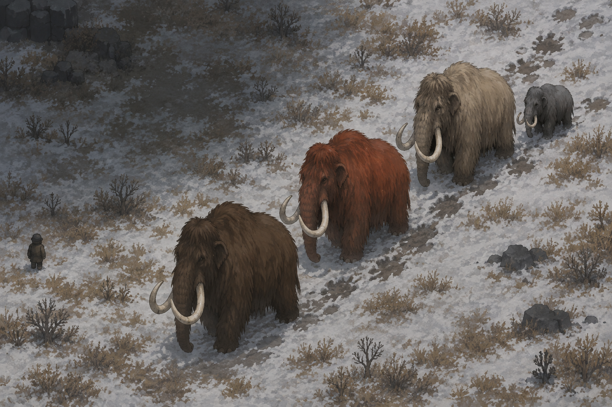

Colorful Coats -
Megafauna! Renew
Coat variations for 26 prehistoric animals, so a mammoth herd is a herd of individuals.

Coat variations for 26 prehistoric animals, so a mammoth herd is a herd of individuals.